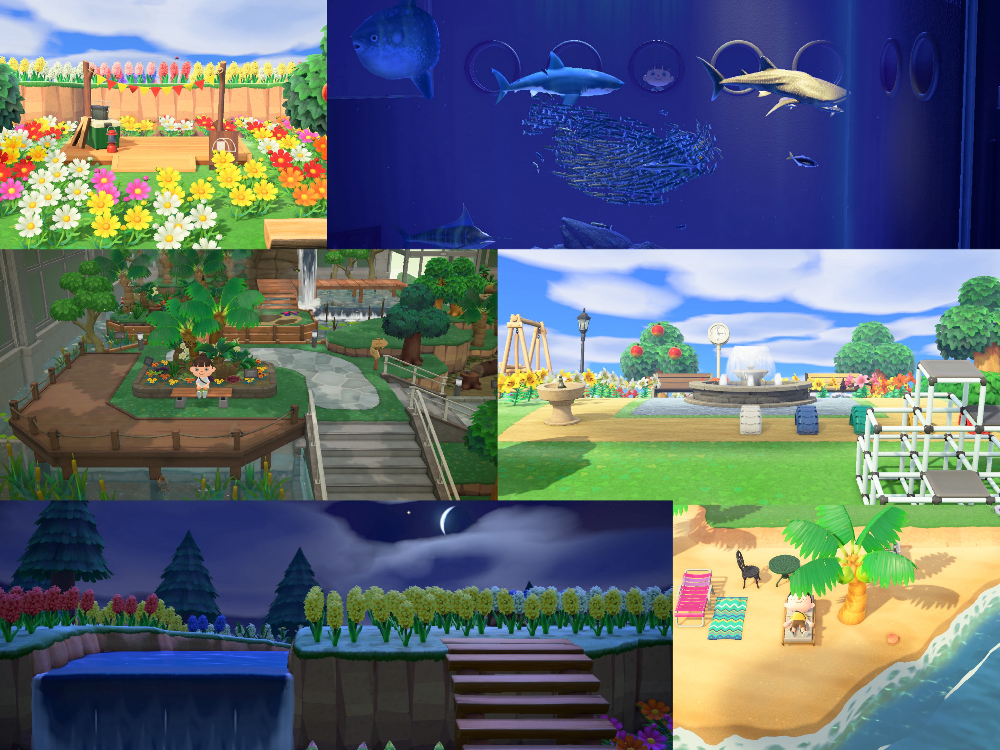
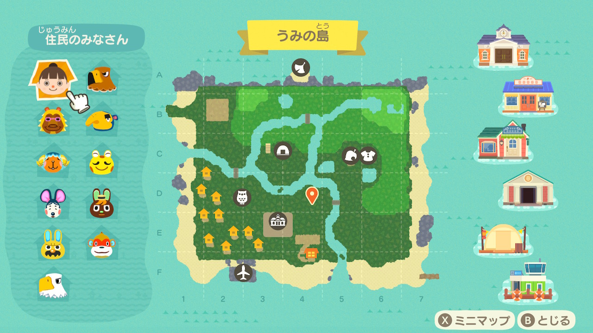
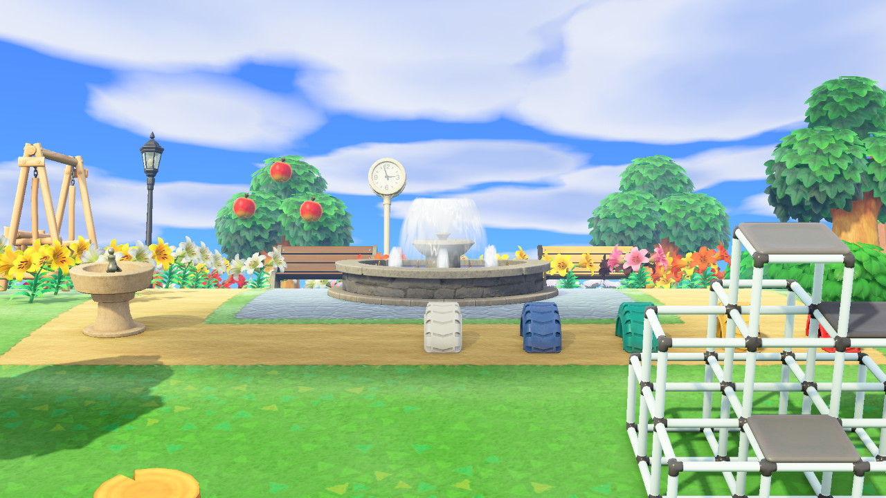

うみの島ガイド
～自然体な暮らしを～
～うみの島について～
うみの島（とう）は自然を生かした島です。
地形の大幅な開拓はせずに、ほぼそのままの状態で居住可能にしました。
ですが、生活に最低限必要な施設は整備されているので心配はいりません。
自然に囲まれた緑豊かな島での自然体な暮らしはいかがですか。



島の特産品はリンゴ、特産花はヒヤシンスです。 他の果物の木や花も多く植生しています。 緑が多いこの島は、四季折々の顔をもっているので島の景色に飽きることはありません。 のびのびと育つ緑と一緒に、穏やかで自分らしくのびのびとした日々を過ごすことができます。